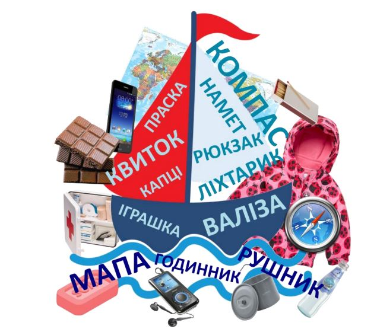

Цей тиждень є гармонійним продовженням попереднього, адже ми ознайомлюємося детальніше з один із захоплень — мандрівками. Проведіть протягом тижня кілька цікавих мандрівок — на один із найзагадковіших материків Землі — Антарктиду, побувайте у столиці України, подорожуйте нашою країною, рідним краєм тощо.
У подорожах може статися багато пригод — приємних і не дуже. Тож треба бути готовими до несподіванок. Зверніть увагу малят на те, як треба поводитися в різних ситуаціях, інсценуйте з ними кілька з них, обговоріть, що саме і навіщо треба насамперед взяти із собою в мандрівку.
Мандруючи, покажіть дітям красу нашої рідної країни, здивуйте їх, захопіть нею. Варто запропонувати малятам принести фотографії з їхніх подорожей, розповісти про цікавинки, які бачили на власні очі, поділитися враженнями.
Розкажіть дітям, чому треба дбайливо ставитися до природи, якої шкоди може завдати тваринам і рослинам навіть невелика кількість сміття. Варто час від часу проводити екологічні заходи — прибирати шкільне подвір’я, частину вулиці мікрорайону, а також допомагати тваринам пережити зимові холоди, очищати гілочки дерев від снігу, щоб вони не зламалися тощо.
Гарним підсумком тижня може стати реальна мандрівка рідним містом разом з родинам учнів.
Гра-дослідження “Плануємо подорож”.
Конструювання “Транспорт мандрівників”.
Сюжетна гра “Мандрівники”.
Освітня подорож “Наша спільна мандрівка”.
Квест “Ми — мандрівники”.
Корисні завдання
Хмари слів “Що потрібно для мандрівки” (до с. 11 підручника)
Oзнайомлення з хмарами слів
Подорож на полюси: Антарктида та Арктика (до с. 11 підручника)
Дивуємо малят — ознайомлюємо з рослинами і тваринами найхолодніших місць Землі
Кросворд “Ми — мандрівники” (до с. 14 підручника)
Знаходимо у хмарі букв слова — пояснюємо, чому саме вони увійшли у кросворд про подорожі